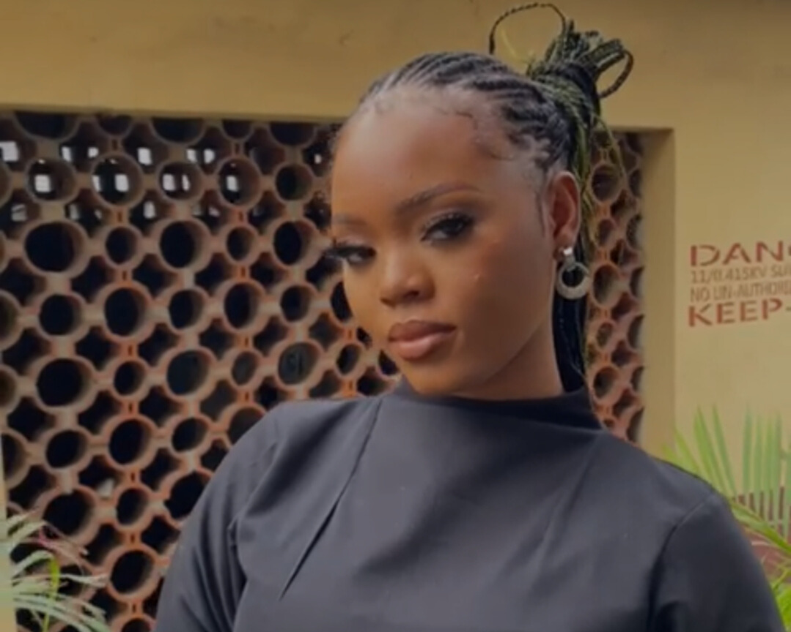

Iroanya Adaeze PreciousLagos, Nigeria || +2347033928770 || iroanyainc@icloud.com || LinkedIn Profile |
 |
Queen’s College, Lagos || High School
University of Lagos, Lagos || Candidate for Bachelor of Science in Pharmacology
Active volunteer in leadership training programs.
Passionate Pharmacology undergraduate and software engineer, specializing in health technology, food distribution, and gender advocacy. Founder of "Nri bu Ndu" with a mission to improve food accessibility in Nigeria and contributor to telemedicine for better healthcare access.
Startup Founder / Entrepreneur - Nri bu Ndu
Software Engineer
Lagos State Ibile Youth Academy Fellow
Advocacy for Women and Girls